Shader Maker Category
This special category contains some useful tools to create and import shaders.
{kind=link}
{kind=link}
Shader Maker
Video Tutorial
You can find the video tutorial about Shader Maker here Create your PBR Material
This tool of Extreme PBR allows you to create a material on the fly if you have the textures on your computer this tool recognizes the names of the textures (Maps) based on the suffix or prefix if it exists, so it is able to place in the right way the maps, this tool is very useful to create materials quickly and easily.
Texture Nomenclature
List of map nomenclatures that this tool recognizes:
Diffuse: _diffuse_xtm, _albedo, _basecolor, _base_color, _diffuse, _color, _diff, _dif, _col, diffuse
Emission: _emission_xtm, _emission, _emissive, _emiss, _emis, _emi
Occlusion: _occlusion_xtm, _ambient_occlusion, _ambientocclusion, _occlusion, _ao, ao
Subsurface: _sss_xtm, _subsurface, _sss, _scattering, _scatter
Subsurface Strength: _sss_strength_xtm
Metal: _metal_xtm, _metalness, _metal, _metallic, metal , metallic
Specular: _specular, _reflection, _mirror, _reflective, _reflex, _spec, specular
Roughness: _roughness_xtm, _roughness, _glossy, _rough, _gloss, _rgh, roughness
Transmission: _transmission_xtm, _transmission, _glass
Mask: _mask_xtm
Alpha: _alpha_xtm, _transparent, _alpha
Normal: _normal_xtm, _normal_map, _normal, _norm, _nrm, normal, _nor
Bump: _bump_xtm, _bump_map, _bumpmap, _bump, bump , height
Displace: _displace_xtm, _displace, _height, _disp, displace
Note
Limitation: Some textures/images if coming from a library other than the one distributed with Extreme PBR could contain parts of those nomenclatures and therefore could be recognized as a type of Map even if it is not. The function of Extreme PBR goes by exclusion starting from the most used, therefore the risk of error is reduced to a minimum, but as said before, it could happen that the textures are confused if they do not adopt a nomenclature standard as indicated above.
Auto PBR
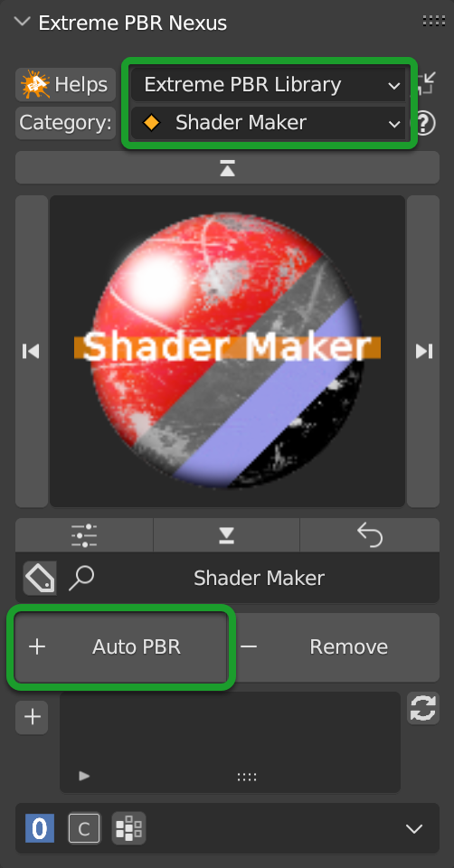{kind=link}
To add a material with Auto PBR, you must select the Shader Maker category and the Shader Maker, Then you will have a situation like in the image above-
When you are in this special category, the whole addon understands and behaves differently, now for example, the Add New button described here: Add New, becomes, Auto PBR and when you press it a window will open File Browser, where you can select the Files you want to use for the material, based on the convention described here is also supported the selection of multiple image files, so you can select all the maps you need for the material.
You can also choose only 1 file (For example: diffuse) even if it does not have a convention, and then add the others maps via Texture Manager Also described here Texture Manager Panel
Material Editor (Nexus)
Here is the Nexus Panel if you have chosen the Nexus setting from the Extreme PBR options menu Material Type
Having applied the material via Shader Maker (Auto PBR button) now you can edit the material via Material Editor panel, below you will find the description of the material editor Module Material Panel
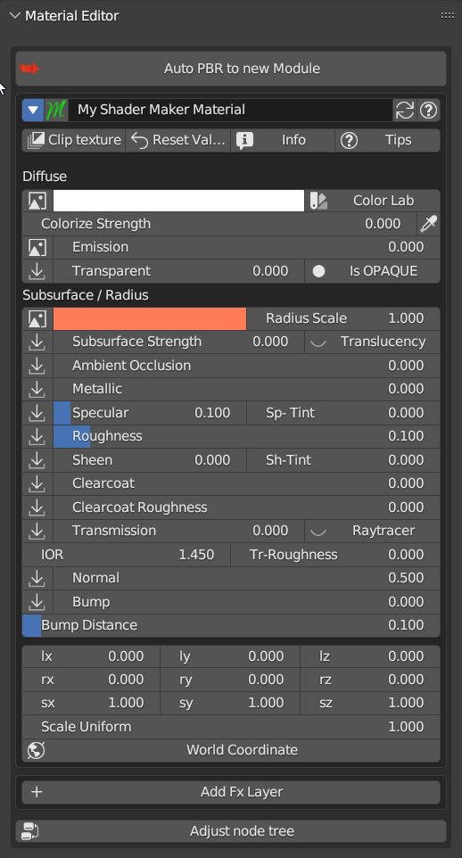{kind=link}
Material Editor (Simple PBR)
Here is the Simple PBR Panel if you have chosen the Simple PBR setting from the Extreme PBR options menu Material Type
Having applied the material via Shader Maker (Auto PBR button) now you can edit the material via Material Editor panel, below you will find the description of the material editor Material Editor (Simple PBR)
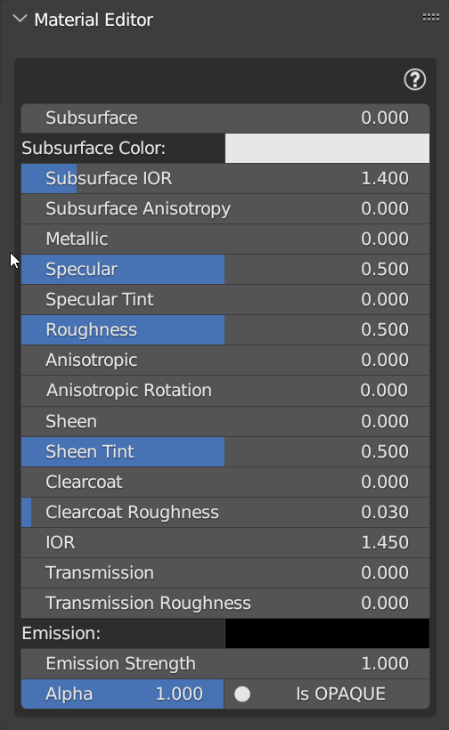{kind=link}
Shader Maker Video
Shader Maker Video allows you to apply a video as a material and easily control it from the panel.
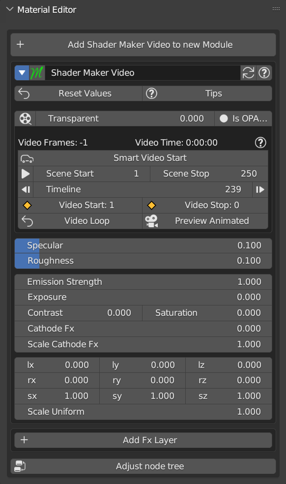{kind=link}
Note
To add this type of Material, just press Add New Ref: Add Replace Remove Buttons a material with a demo video will be added that you can replace with your video.
For the properties described below, refer here, they are common to most of the Extreme PBR materials:
Transparent: Transparent
Transparent Mode: Transparent Mode
Specular: Specular
Roughness: Roughness
Emission: Emission
Exposure, Contrast, Saturation: Adjust color properties
Location XYZ: Locations XYZ
Rotation XYZ: Rotation XYZ
Scale XYZ: Scale XYZ
Scale Uniform: Scale Uniform
{kind=link}
Smart Video Start
{kind=link}
Automatically sets the video to start at frame 0 of the sequencer, all the video will be played, in full loop
Play Animation
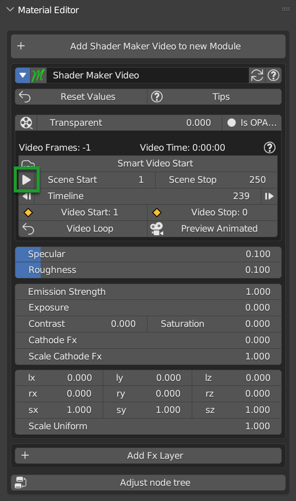{kind=link}
Play Animation button starts the Blender Timeline so that the video starts playing
Scene Start/Stop
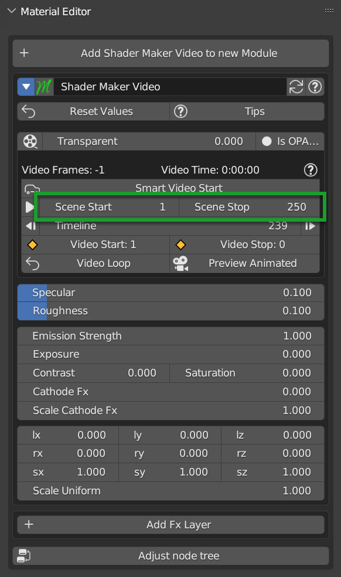{kind=link}
Scene Start, Scene Stop, allows you to set the start frame of the Timeline and the end frame of the Timeline on the fly, without having to open the Blender timeline.
Jump to Start/End

These 2 buttons allow you to jump to the initial or final frame of the video, in practice, these 2 buttons move the Blender timeline to the initial or final frame of the video (Those also set in the Scene Start/Stop section)
Timeline
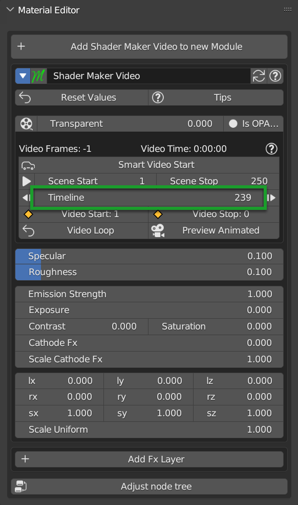{kind=link}
Timeline Slider, is the representation of where the Blender timeline reader is, in practice through this slider you can move the Blender Timeline without having to open the Blender Timeline.
Note
If in Play it will be updated every time you pass the mouse over the panel
Video Start/Stop
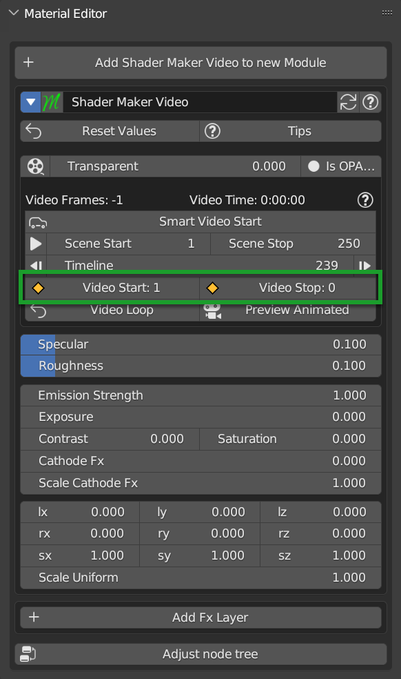{kind=link}
By these 2 buttons, you can set where the video should start and where it should end. You can start the video at any frame the important thing is that the Start frame is less than the End frame and vice versa.
Video Loop
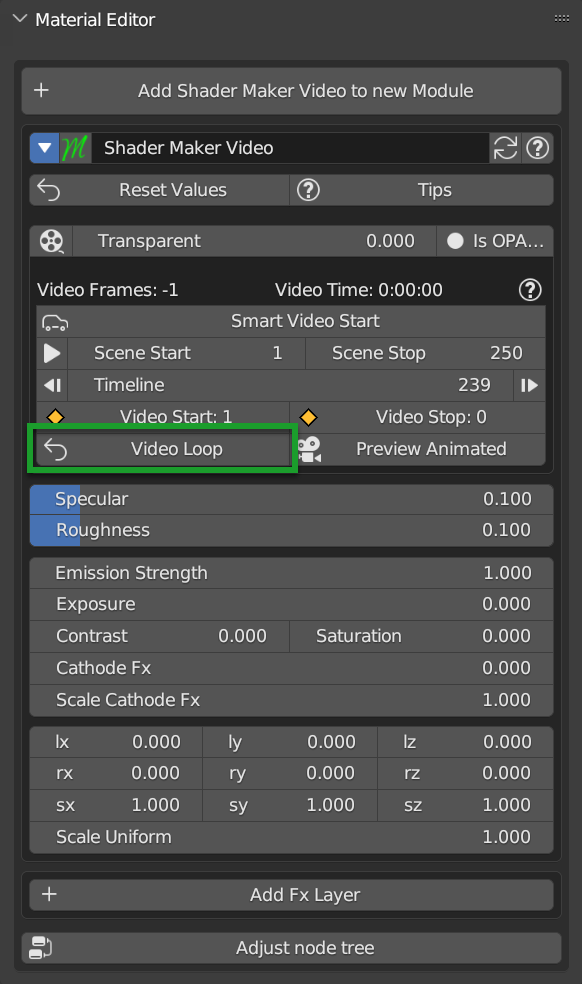{kind=link}
This button allows you to set the video to loop or not, if the video is set to loop, it will start again from the beginning when it reaches the end frame.
Preview Animated
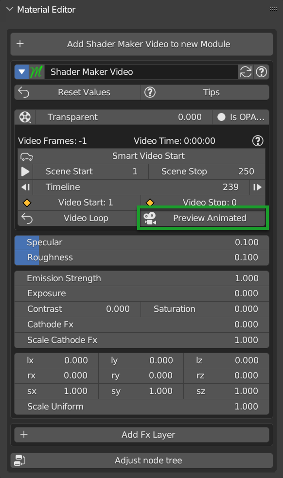{kind=link}
This button allows you to preview the video in the viewport, usually this is activated when you press the button described here Smart Video Start
Cathode Fx
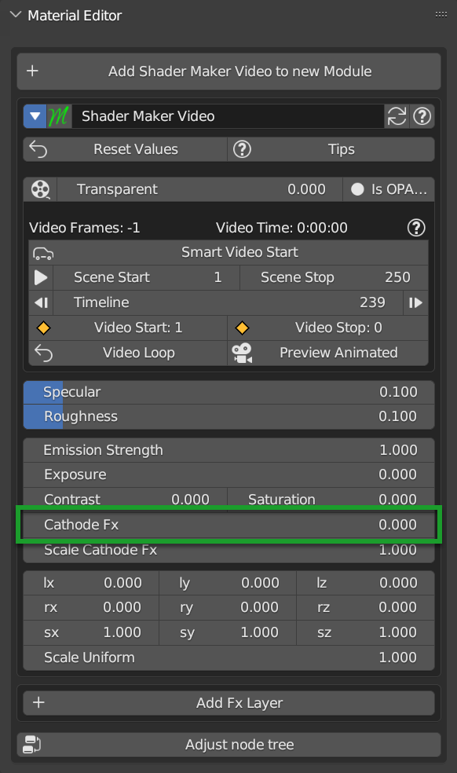{kind=link}
Cathode Fx allows you to adjust the Cathode effect, Here is an example with the effect at maximum:
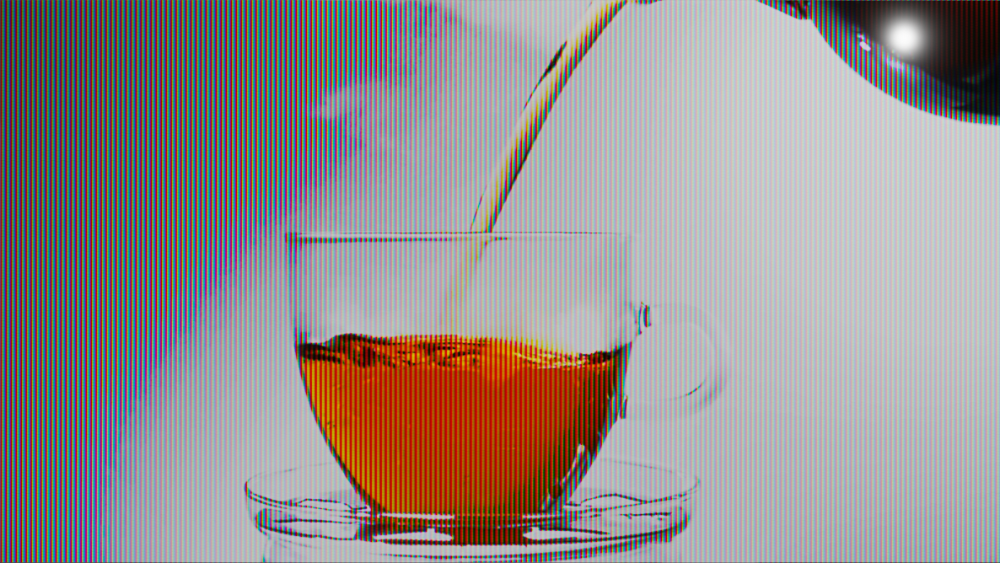{kind=link}
Scale Cathode Fx

Scale cathode fx allows you to adjust the size of the cathode effect, here is an example with a big scale:
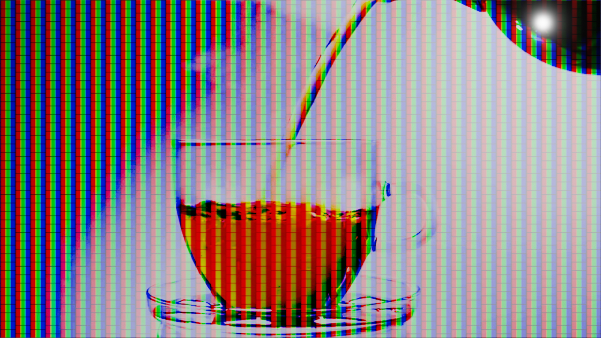{kind=link}
Painter
Painter Tool, allows you to paint on images, it differs from the Texture paint described here Texture Paint because the Texture Paint paints on a mask, while the Painter, paints directly on an image.
Tip
To access the Painter, you must be in the Default Library Of Extreme PBR, in the Shader Maker category, and select the Painter material from the Material Browser and apply it to the object you want to paint.
Painter Panel
Once the material has been added, the Material Editor panel will look like this:

Bellow the properties and operators shared with other Extreme PBR materials:
Show / Hide Group: Show / Hide Group
Search Module/Fx: Search Module
Module/Fx Name: Module Name (Group Name)
Replace Module/Fx: Replace Module
Reset Value: Reset Values
Tips: Tips
Paint Tools: Paint Tools
Re-Project: (Only in Paint Mode) re_project
Maps Size
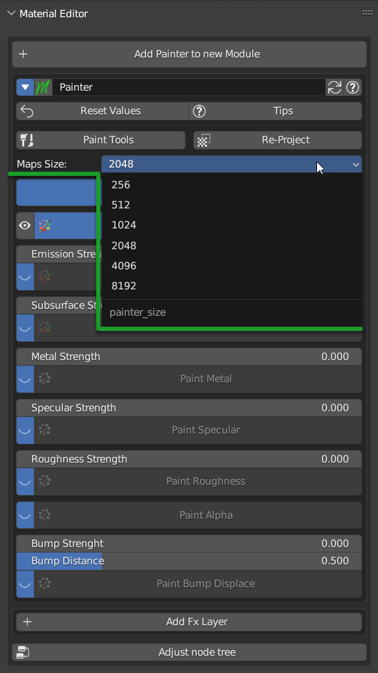{kind=link}
Maps Size property allows you to set different resolution sizes for maps, in practice if you set 1024, all maps will be rendered at 1024x1024, if you set 2048, all maps will be rendered at 2048x2048 and so on.
Stop Paint
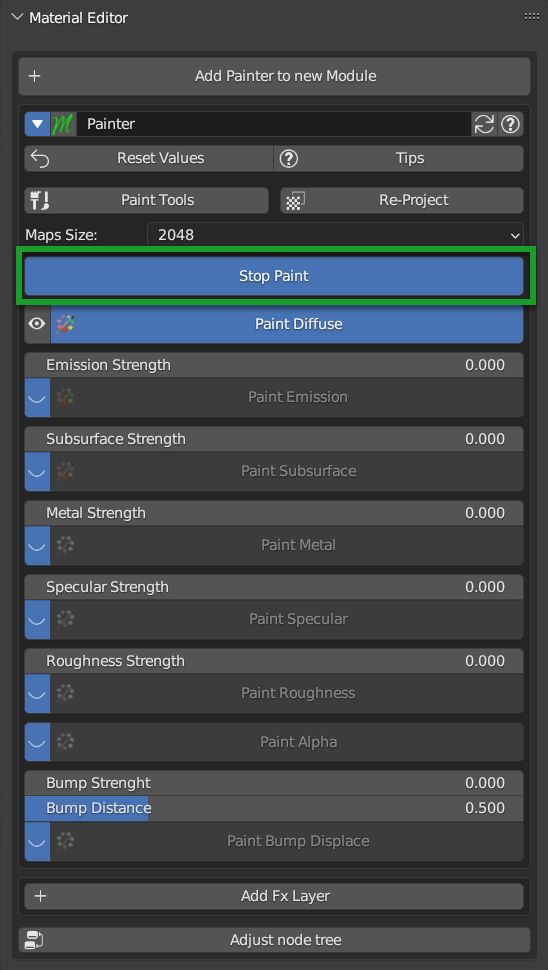{kind=link}
Stop Paint Button, simply stops painting mode.
Note
This button will only appear if you are in Paint mode
Mute/Un-Mute Map
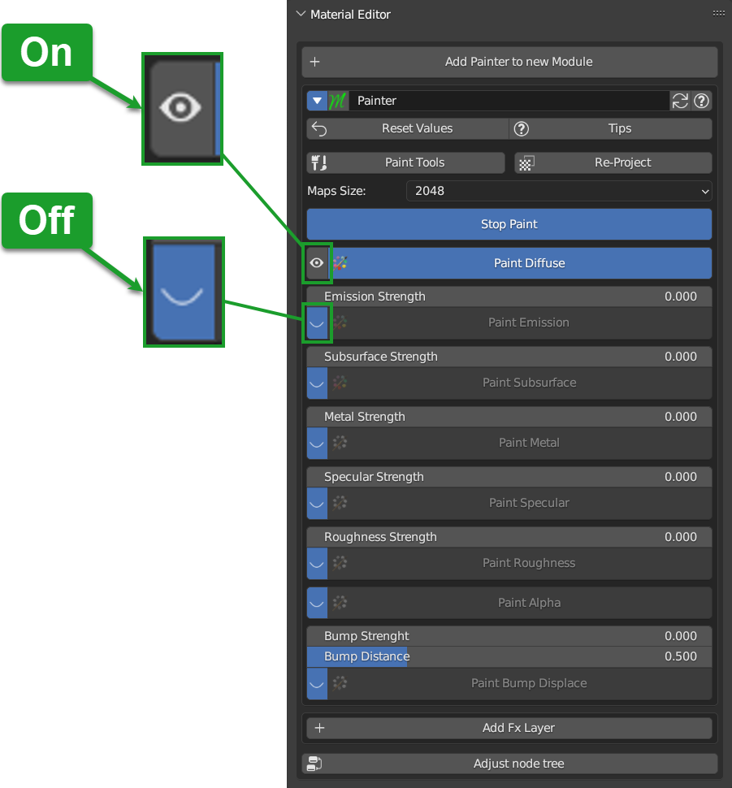{kind=link}
In this Example, all maps are in mute, except the Diffuse map, This is the default situation when you apply the Painter material.
So the Mute/Un-Mute Map buttons, allow you to disable or enable maps, in this way you can save system resources.
{kind=link}
Texture Manager Panel RGB
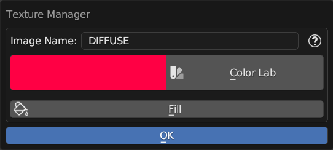{kind=link}
Once you press the Texture Manager Button button, the Texture Manager panel will open. In the following paragraphs you will find the description of the panel properties.
Note
In order to paint the maps in Black and White type Specular, Roughness, Metal, Etc … refer here: Texture Manager Panel BW
Image Name
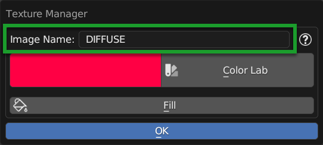{kind=link}
This text box will show the name of the image you are editing, in addition you can edit the name of the image you are painting, so as to make the image with the name you like best, very useful in case you are painting some materials using the Painter, because by default the names of the maps will always be the same, but with increasing numerical order (.001, .002, .003, etc.)
Brush Color

This property allows you to change the color of the brush, in practice when you paint, the color that will appear on the texture will be the one you set here.
This color can also be set from the Color Lab described here Color Lab
Fill
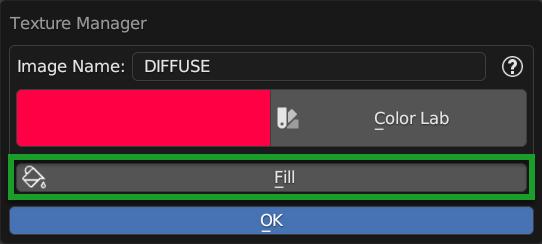{kind=link}
This button allows you to fill the map with the color you have chosen in the Brush Color Brush Color
Texture Manager Panel BW
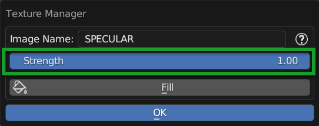{kind=link}
This panel differs from the RGB Type in that the textures of type Specular, Roughness, Metal, Etc … are in Black and White, so here, you will not choose the color, but the shade of gray, everything will be managed by the Strength Slider, where 0.0 will be Black and 1.0 will be White, consequently, painting at 0.0 will work as if you were deleting.
Note
In order to paint the maps in RGB type Diffuse, Emission, Etc … refer here: Texture Manager Panel RGB